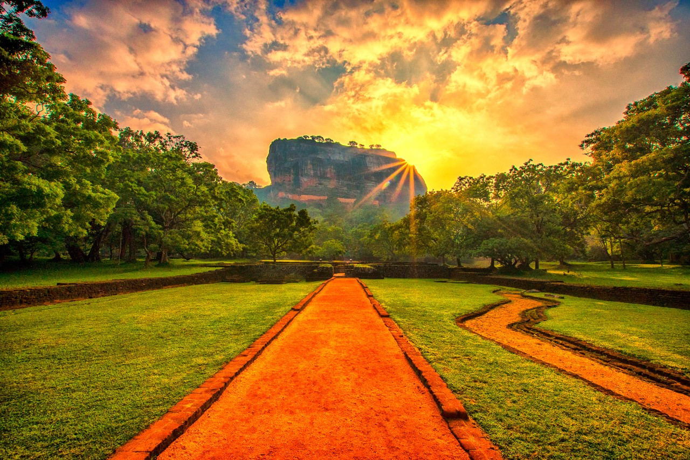
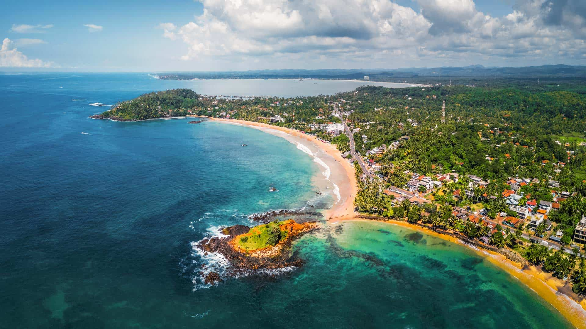

Popular Destinations
Explore the most beautiful places in Sri Lanka

Must Visit
Sigiriya
Central Province
Ancient rock fortress and palace ruins, one of Sri Lanka's most iconic landmarks.

Kandy
Central Hills
Sacred city home to the Temple of the Tooth Relic.

Galle
Southern Coast
Historic Dutch fort and charming colonial architecture.

Ella
Hill Country
Scenic mountain village with hiking trails and tea plantations.

Mirissa
South Coast
Stunning beach destination famous for whale watching.

Nuwara Eliya
Hill Country
Little England with cool climate and tea estates.